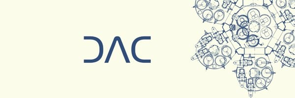
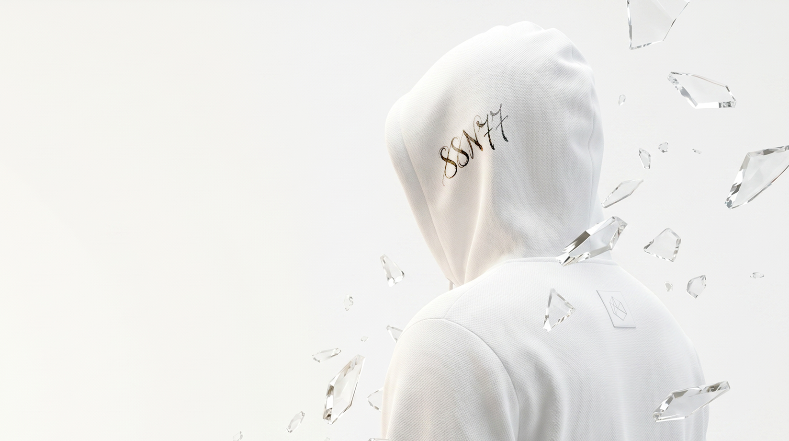
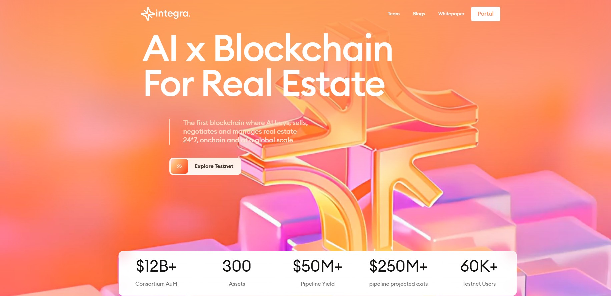
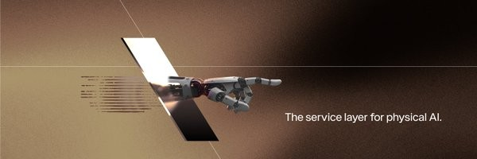
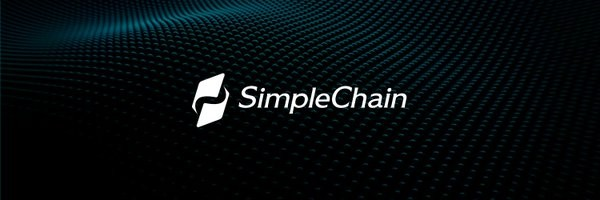
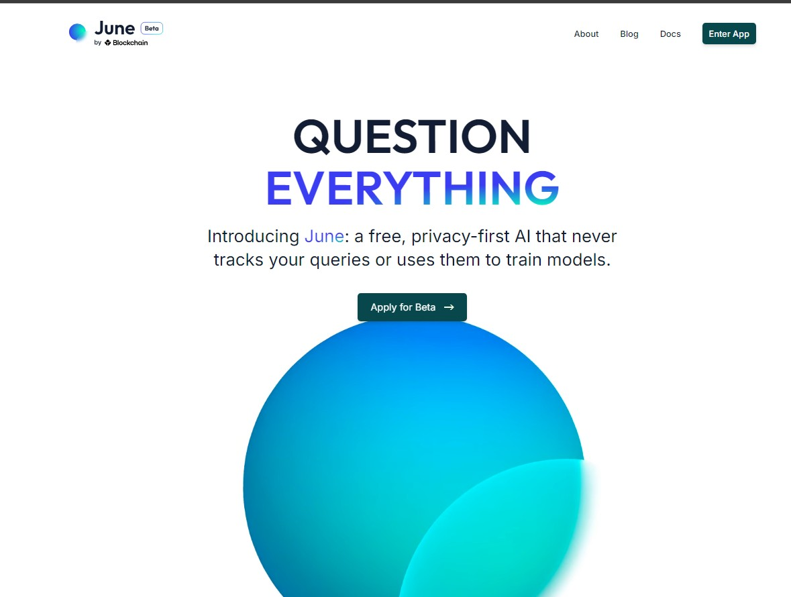

WorkingDac Chain
testnetЗапити

Авторські скрипти, софти та боти, які працюють з вашими акаунтами поки ви відпочиваєте. Є можливість зробити на замовлення: бота / софт / скрипт під вашу задачу або проект
Доступно 7 софтів

Working
Working
Working
Working
UpdatingПотрібен бот, софт чи скрипт під конкретний проект? Напиши задачу — зроблю рішення під тебе.
Обговорити замовленняГотовий продукт або замовлення під задачу.
Акаунти, проксі, параметри — за мануалом у Docs.
Софт працює сам, поки ти відпочиваєш.
Акаунти готові під дропи / задачу.
Я закладаю максимальний антифрод-захист: рандомізацію дій, унікальні затримки (sleeps), підтримку індивідуальних проксі та повну імітацію поведінки людини. Якщо дотримуєшся моїх рекомендацій із мануалів (не перетинаєш гаманці, використовуєш якісні проксі) — ризик зводиться до мінімуму.
Абсолютно ні. Весь код уже написаний і протестований. Тобі потрібно лише відкрити конфіг-файл, вставити свої приватники / API / проксі за готовим шаблоном і запустити. До кожного продукту йде покрокова інструкція в розділі Docs.
Я постійно моніторю працездатність софту. Якщо проєкт вносить зміни — оперативно випускаю патч. Усі оновлення в межах твоєї підписки чи ліцензії безкоштовні та швидко публікуються в моєму Telegram-каналі.
Більшість моїх рішень кросплатформні — працюють на Windows, macOS і Linux. Для масштабних ферм раджу віддалені сервери (VPS) на базі Ubuntu для безперебійної роботи 24/7.
Так, я роблю кастомну розробку ботів, скриптів та автоматизації будь-якої складності. Напиши в Telegram, коротко опиши задачу (ТЗ) — і обговоримо терміни та вартість реалізації.
Напиши в Telegram — підкажемо, який софт під твої задачі.
Написати в Telegram